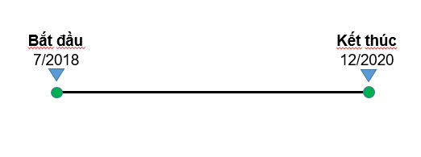

Tên đề tài
Nghiên cứu dự báo diễn biến sạt lở, đề xuất các giải pháp để ổn định bờ sông và quy hoạch sử dụng vùng ven sông phục vụ mục tiêu phát triển kinh tế - xã hội vùng hạ du hệ thống sông Đồng Nai
Thuộc: Chương trình KC.08.28/16-20Thời gian thực hiện (30 tháng)
